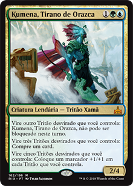
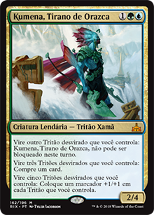

Prepare-se: Rivais de Ixalan chegará neste mês!
O pré-lançamento acontecerá nos dias 13 e 14 deste mês, e a data oficial do lançamento será no dia 19 de janeiro, ficando disponível então nas lojas. Você está preparado para modificar o seu deck e colocar novas cartas? Nós selecionamos algumas cartas para mostrar para você o quão forte esta extensão do bloco de Ixalan será, dê uma olhada de acordo com sua tribo:
DINOSSAUROS:

Desde o lançamento de Ixalan, os dinossauros foram as criaturas mais fortes (não quer dizer que sejam as melhores). Eles são enormes e tem bastante poder/defesa, além de alguns deles possuírem uma habilidade especial chamada "Enfurecer". Em Rivais de Ixalan, nós iremos ver os Dinossauros Anciões, um para cada cor (verde, vermelho, branco, preto e azul). Acima podemos ver os dinossauros anciões para o deck Naya, já que é dificil jogar com o preto e azul devido aos custos de duas manas das respectivas cores. Você poderá vê-los (Nezahal e Tetzimoc) em outra sessão do nosso site, na Lista de Cartas de Rivais de Ixalan, caso se interesse.
PIRATAS:

Os piratas assim como os dinossauros foram uma das tribos inéditas no bloco de Ixalan, e eles são muito ágeis. Eles estão presentes nas cores da tribo Grixis (azul, preto e vermelho) e você pode montar decks de aggro ou controle com eles, além de possuírem tesouros que geram mana de qualquer cor quando sacrificados. Eles podem não ter muito poder nem resistência, mas infestam o campo de batalha e são bastante violentos, sempre em ataque constante ou roubando mágicas dos oponentes. Rivais de Ixalan tratá novos piratas que se dão muito bem com a sinergia de decks aggro ou controle.
TRITÕES:
 

Os sereios estão de volta! Presentes nas cores azul e verde, os tritões são mestres em crescimento: eles não são muito fortes, porém em conjunto fazem um estrago, além de que eles dão bônus uns aos outros colocando marcadores +1/+1 que pouco a pouco vão crescendo, e viram criaturas gigantes. Além de inbloqueáveis também. Não é muito difícil deixar o campo de batalha cheio deles e acabar com os oponentes. Com Rivais de Ixalan, teremos cards bem fortes para esta tribo, como por exemplo o lendário Kumena. Decks de tritões conseguem ser competitivos no standard na situação atual.
VAMPIROS:


Assim como os tritões, os vampiros já existiam no Magic e estão de volta em Ixalan. Eles podem ficar na luz do sol sem problemas e conseguem ganhar pontos de vida facilmente, além de infestar o campo de batalha com fichas 1/1 com vínculo com vida. A estratégia é similar aos tritões: são pequenos, porém em enorme quantidade dão muito trabalho. Ao invés de inbloqueáveis e ganharem marcadores, alguns deles tem toque mortífero e fazem com que os oponentes percam pontos de vida e o controlador ganhe. Com o lançamento de RIX, assim como as demais tribos, os vampiros ganharam fortes adições nas cores preto e branco.
Espero que tenham gostado do artigo, e nos vemos em Rivais de Ixalan!